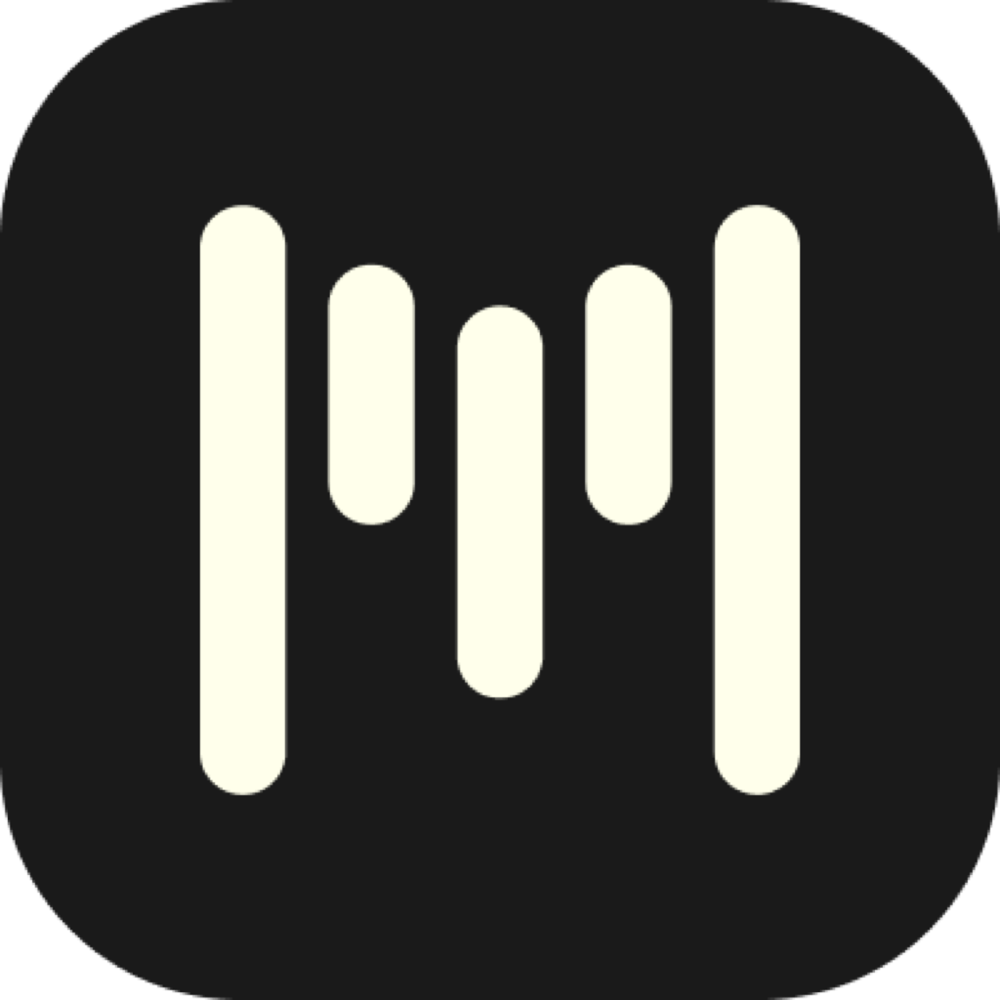

Agent Task
Speak a task. The app pastes a finished draft. The draft is grounded in the frontmost app and a screenshot. The model returns only the text to paste.

misprflowmacOS
Mispr Flow is a free and fast dictation app for Mac, with agent mode. Hold a key, talk, and the text lands in the field you are using.
Download for MacA spoken task becomes text in the field you are already using.
Speak a task. The app pastes a finished draft. The draft is grounded in the frontmost app and a screenshot. The model returns only the text to paste.
Select text, speak the change, and the selection is replaced.
Agent mode uses the model you configure. There is no Mispr Flow account.
01
Open MisprFlow.dmg and drag the app to Applications.
02
Create a free key at groq.com.
03
Hold Fn to talk, or tap Command-Fn to start and stop.
There is no Mispr Flow server. Audio and text go only to the transcription and model provider you configure.